MICROSOFT 365 COPILOT BLOG
Microsoft 365 Copilot: What’s New | June 2026
This is the English edition of the Chinese compilation of Microsoft 365 Copilot’s official monthly update for June 2026. Each month, we review new features and improvements to help Microsoft 365 customers stay current with the latest Copilot capabilities and enable users to work more efficiently in the apps they use every day.
User capabilities
Copilot Cowork reaches general availability (GA)
- Switch between Chat and Cowork with one clickRolled out in June
A new toggle in the Microsoft 365 Copilot app lets users switch easily between Chat and Cowork—the former focuses on “getting answers,” while the latter focuses on “taking action.” - Automatic model selection by taskRolled out in June on Frontier
Cowork can now select the best-suited model for different tasks: OpenAI GPT-5.5 Thinking for complex reasoning, Anthropic models for visual work such as PowerPoint and graphics, or GPT-5.5 for in-depth research with citations. Users receive more tailored support for different types of work without having to select a model manually. - More plugin integrationsRolled out in June
Cowork’s plugin support has expanded further, allowing users to access more business systems directly within their workflows. New additions to the plugin store include Enosix, Harvey, LSEG, Miro, monday.com, Moody's, Morningstar, S&P Global Energy, and TeamsMaestro, while Databricks is available through sideloading. Microsoft Fabric and the full Dynamics 365 portfolio, including Sales, Customer Service, and ERP apps, are also supported. - Custom skillsRolled out in June
Users can now easily create, edit, and manage custom skills from the “Customize” tab, enabling Cowork to work the way they want. Skills are essentially sets of custom instructions that users can refine over time. They can also combine their own workflows with skills provided by partners or deployed across the organization through plugins. This allows teams to standardize repetitive tasks without rewriting prompts each time. - Create and edit visual assets directlyRolled out in June
Cowork can now create and edit visual assets directly, including presentation graphics, document illustrations, and email images. This capability is powered by OpenAI’s ChatGPT Images 2.0, allowing users to generate visual content within their workflow without switching tools. Cowork can also use PowerPoint templates with brand guidelines defined in the organization’s asset library, applying approved colors, fonts, logos, and layouts from the outset and significantly reducing manual formatting and brand correction after a presentation is generated. - Work across systems through the Edge browserRolled out in June on Frontier
Cowork can use the Edge browser to perform work across an organization’s business systems, websites, and intranet sites. - Mobile support (iOS and Android)Rolled out in June
Cowork is now supported on mobile devices. Users can start work on one device and seamlessly continue on another with full context and conversation history preserved, giving mobile users the complete Cowork experience without losing progress. - Push notifications for long-running tasksRolled out in June
For long-running tasks, Cowork sends push notifications about approval requests, input requests, and completion. Users do not need to constantly monitor work in progress and can continue with their own tasks while Cowork completes its work.
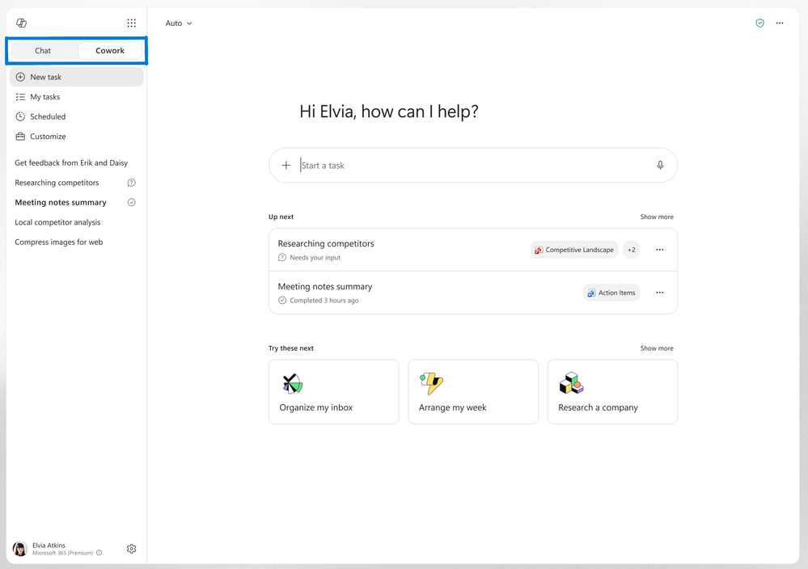
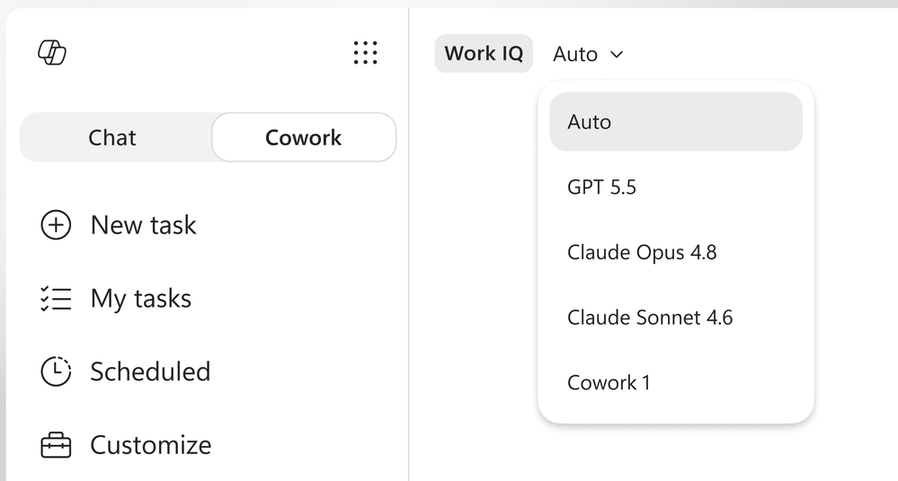
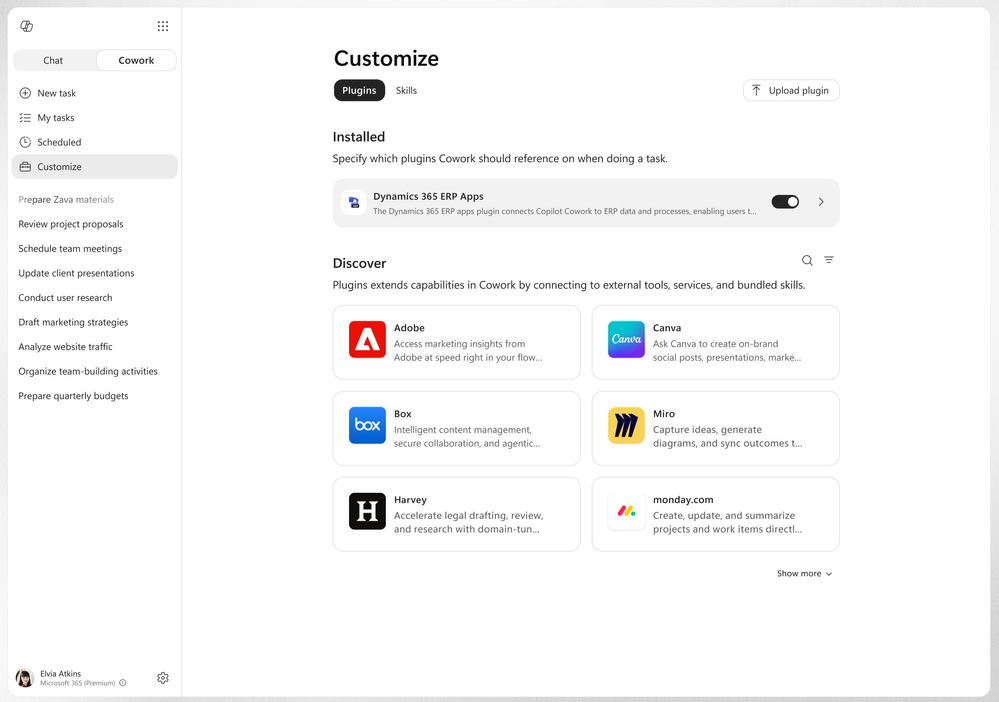
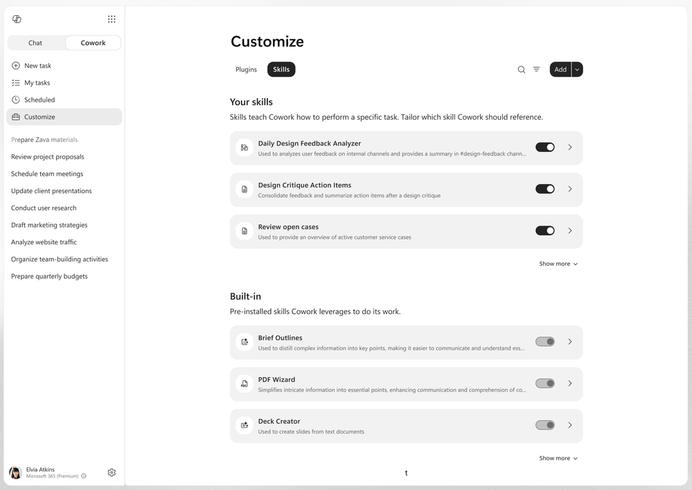
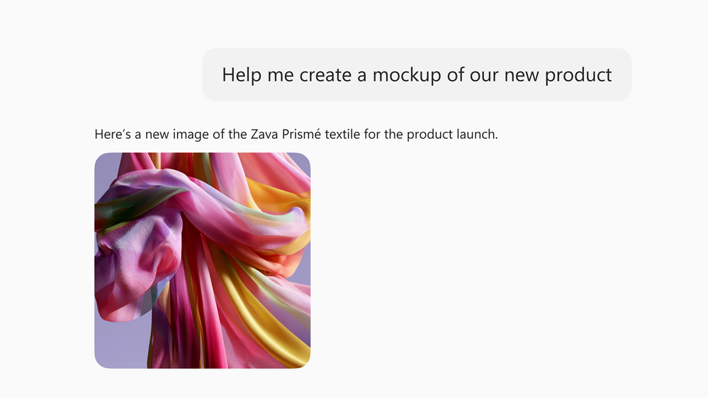
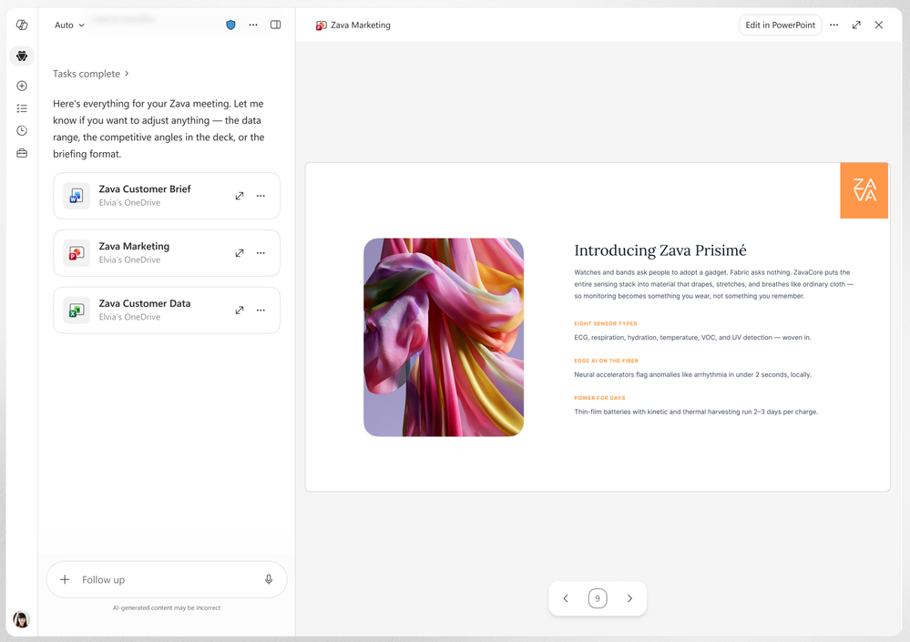
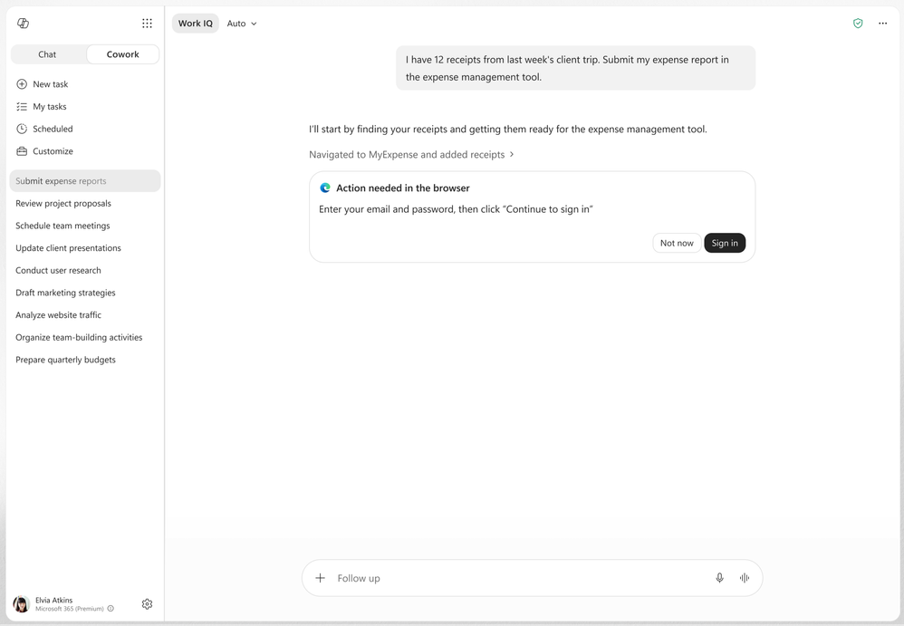
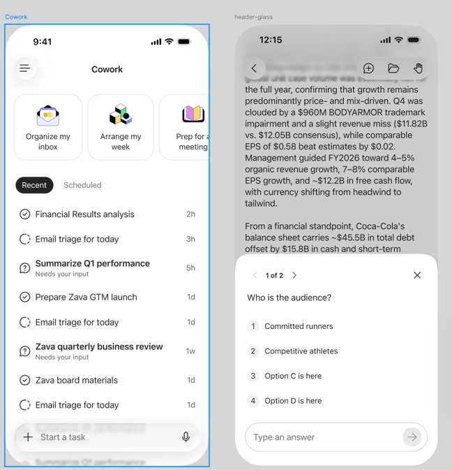
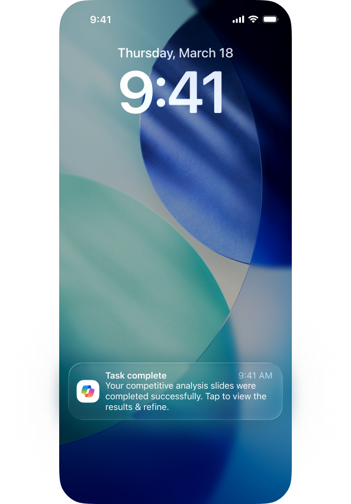
Copilot app and Chat: enhanced citations and reasoning
- Reason over Power BI enterprise dataRolling out in June on Frontier
With Work IQ, Microsoft 365 Copilot can now reason over Power BI enterprise data and provide grounded answers directly from Power BI reports and semantic models. Users can ask questions in natural language and receive accurate answers without writing their own queries, bringing governed BI data into the Copilot experience and producing trusted insights faster. - Search and query Dataverse business dataPublic preview in June; general availability in September
Also powered by Work IQ, Copilot can now search and query business data in Dataverse, bringing line-of-business records into workflows across Copilot Chat experiences. Users can ask about Dataverse data in natural language and receive grounded answers without leaving Copilot, extending Copilot’s reach to the structured business data their organization stores in Dataverse. - Deep citationsRolled out in June
Deep citations let users verify Copilot’s results: links point directly to the specific location in the cited file rather than to the file as a whole. The feature initially supports Word and PowerPoint files and will later expand to meeting, web, and PDF sources. Enabling users to trace answers back to their source helps build trust in Copilot output. - RegenerateRolled out in June
The new “Regenerate” action offers simple options such as “Try again” and “Switch model,” allowing users to get another response to their latest prompt directly in Copilot Chat. Without starting over, they can explore different answers and refine the output in place to improve quality and find the most suitable response. - VisionRolling out in July
When work depends on what users can see, Vision in Microsoft 365 Copilot helps them get answers faster. Instead of struggling to describe a dashboard, document, image, error message, or real-world object, users can show it directly to Copilot and ask questions through voice conversation. Copilot combines this visual context with available work and web context to explain what is in view, provide insights, and guide the next step. - “Suggested edits” for Copilot PageRolled out in June
Users can now select “Suggested edits” from the Copilot quick menu to receive actionable feedback on a Copilot Page. Copilot analyzes the page content and provides inline feedback and suggestions to improve clarity and quality. Users can apply them directly to the page, quickly refining their work and maintaining momentum without switching tools.
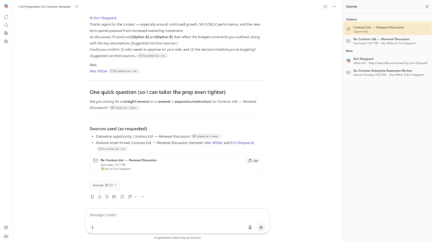
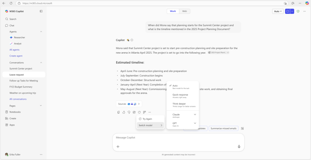
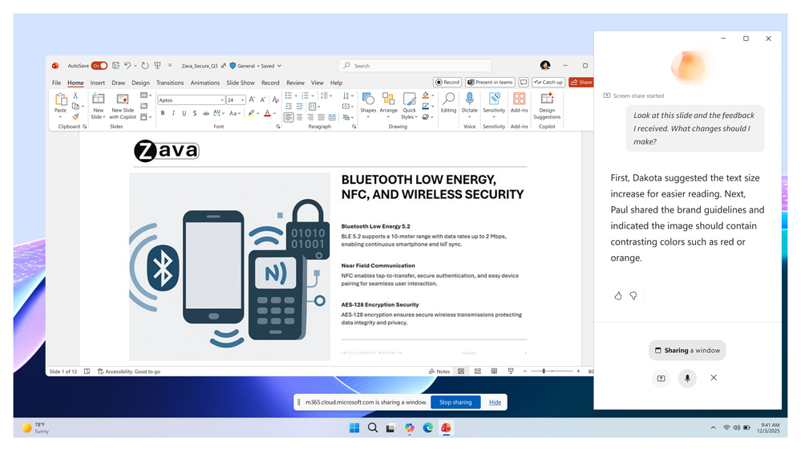
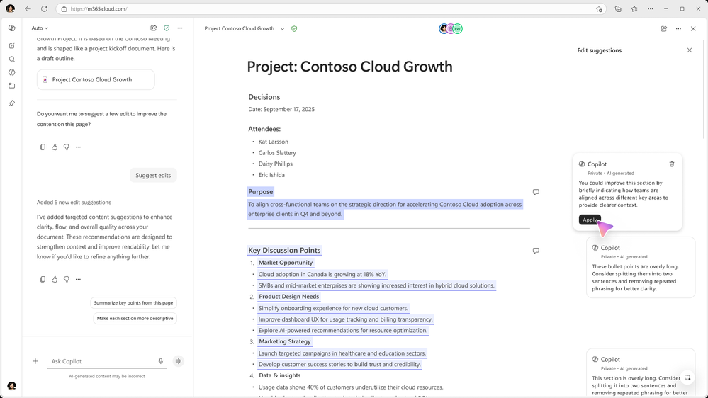
Copilot Notebooks: new reference sources and broader availability
Use Outlook email as a reference sourceRolling out in July
Users can add Outlook email as a reference source in Copilot Notebooks. With email content included in a notebook, Copilot can answer based on the conversations, decisions, and context that drive work forward, connecting email context with the broader notebook workspace.
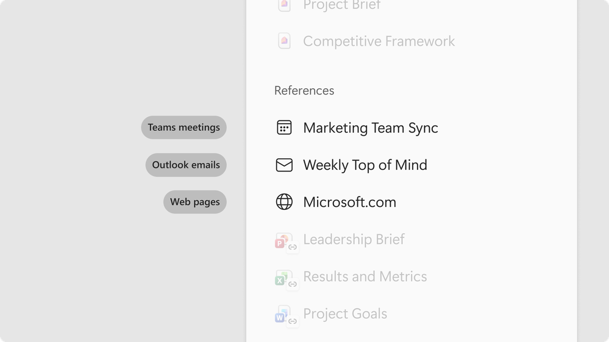
Available to Copilot Chat usersRolled out in June
Copilot Notebooks, previously available only to licensed Microsoft 365 Copilot users, has begun rolling out to Copilot Chat users. This gives more team members a shared space where they can bring together project context, work from reference sources, and turn that information into practical tools such as mind maps and study guides.
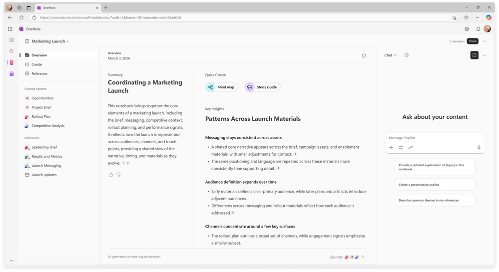
Copilot in Outlook: settings access and targeted refinement
Access to Copilot settings in classic Outlook for WindowsRolling out in July
Classic Outlook for Windows now provides direct access to Copilot settings, allowing users to find and adjust Copilot options without leaving Outlook for a more convenient management experience.
Refine selected parts of an email draft in the compose canvasRolled out on the web in June
Users can now refine email drafts with Copilot directly in the compose canvas: by selecting a paragraph in the draft, they can ask Copilot to adjust its length, tone, or structure, making targeted changes easily without rewriting the entire email.
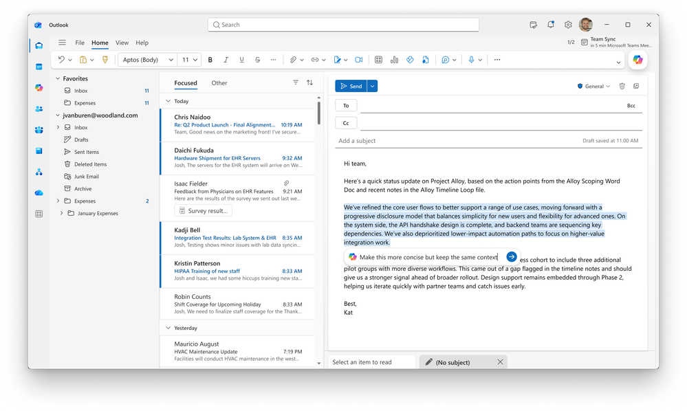
Copilot in Word: enhanced document editing
- Model selectionRolled out in June
Copilot in Word now supports model selection, allowing users to choose an Anthropic model while editing a document. For tasks such as rewriting, summarizing, restructuring, and polishing content, writers can select the model best suited to the work, giving them more control over the editing experience and greater confidence in achieving the desired tone, structure, and level of detail without repeatedly rewriting prompts or starting over. - Copilot Catchup content cardsRolled out in June
Copilot Catchup is now presented as content cards that quickly summarize what has changed since the user last opened the document. Rather than rereading the entire document to find updates, users see a concise recap immediately, providing an efficient way to catch up quickly on shared documents and continually evolving files. - Create and insert imagesRolled out in June
Users can now create and insert images with Copilot in Word. As part of the agentic editing process, Copilot generates images and embeds them in place, bringing image creation directly into the Word writing experience. - Agentic editing capabilities on iOSRolled out in June
Copilot’s agentic capabilities in Word are now available on iOS, allowing users to edit documents and add content on an iPhone or iPad. Core writing support covers mobile scenarios where work needs to move forward at any time: users can make quick updates, draft new content, and polish existing text on a mobile device, while more advanced operations such as inserting images and tracking changes can be completed in the full version of Word. - Retain Copilot Chat conversation historyRolled out in June
Word now carries conversation history from Copilot Chat into the app, allowing users to continue where they left off without losing the thread of the conversation and keeping complex, multistep document work coherent. - Make changes based on commentsRolled out in June
Copilot can understand and reason over comments, then make the corresponding changes to the document. Instead of manually addressing feedback one item at a time, users can ask Copilot to implement the suggested changes directly, accelerating revision cycles for collaborative documents.
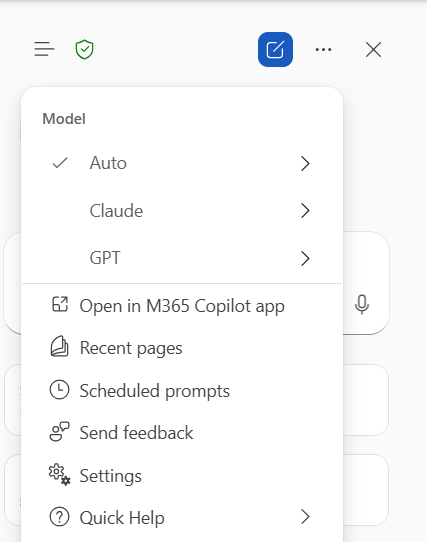
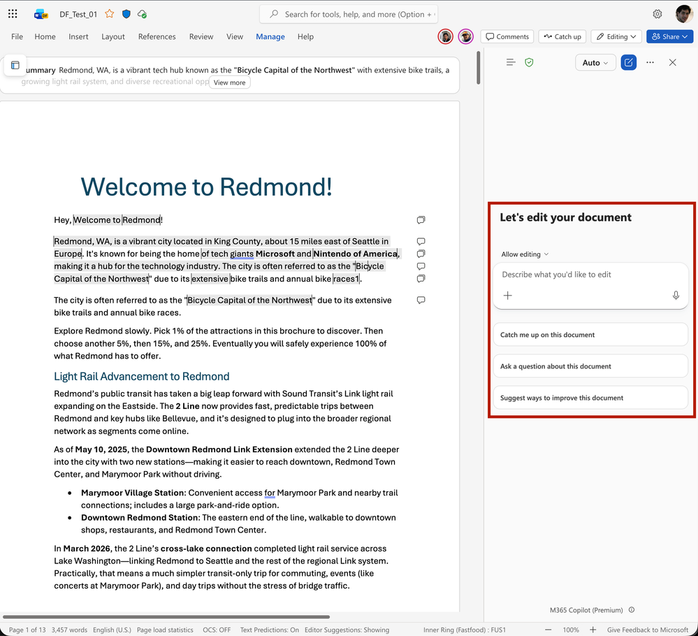
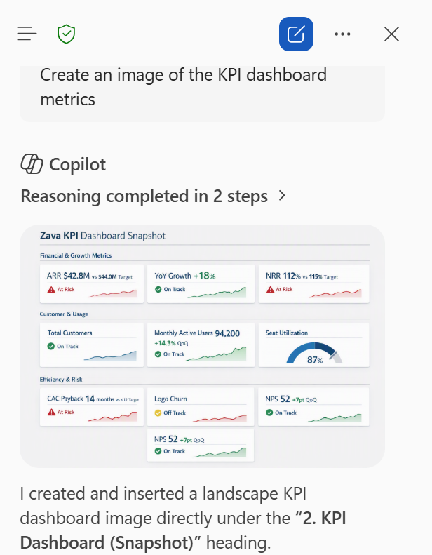
Copilot in PowerPoint: brand kits, skills, and reference sources
Brand Kit PickerRolled out in June
The Brand Kit Picker makes it easy for users to create presentations that follow organization-approved brand templates. When creating a presentation with Copilot, users can select an admin-approved brand kit to apply the correct colors, fonts, and visual style from the outset, helping teams produce polished, on-brand presentations faster while reducing manual formatting and brand correction after generation.
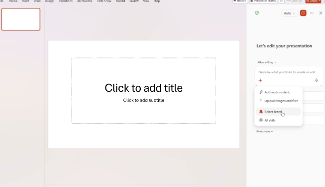
Create and reuse Copilot skillsRolled out in July
Users will be able to create and reuse Copilot skills for repeatable PowerPoint authoring tasks. By saving commonly used instructions as skills, they can build, refine, and format presentations in a standardized way without rewriting the same prompts each time.
Reference SharePoint libraries and OneDrive foldersRolled out in June
When creating presentations with Copilot, users can now reference SharePoint libraries and OneDrive folders. Copilot uses these sources to ground the presentation in the organization’s existing content, producing a presentation that genuinely reflects the specified materials rather than relying on generic information.
Copilot in Excel: skills, personalization, and rules sheets
SkillsRolled out in June
Users can now use skills in Excel to package repeatable workflows as reusable instructions. Teams can create custom skills for common analysis, modeling, or reporting tasks and invoke them in Excel at any time, standardizing complex work without repeatedly writing the same prompts.
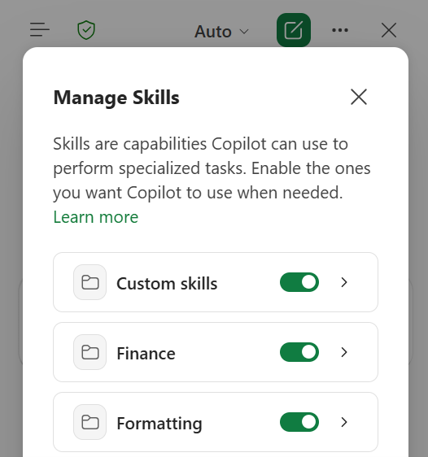
PersonalizationRolled out in June
Copilot in Excel now supports personalization: users set long-term preferences once, and Copilot follows them consistently across all workbooks. Users can define guidelines for formatting, naming conventions, formulas, PivotTables, and report styles so that Copilot’s edits align with their working habits without repeating the instructions in every prompt. This produces more consistent output, reduces rework, and gives users greater control over how Copilot edits spreadsheets.
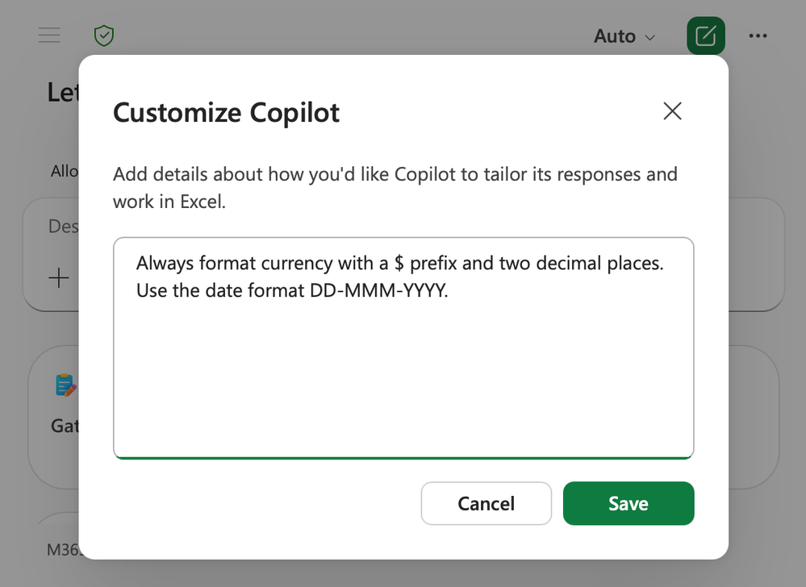
Workbook rules sheetsRolled out in June
Copilot in Excel now includes workbook rules sheets, enabling teams to define standards that remain with a specific workbook. Rules can be written in a .Rules worksheet and cover structure, formatting, naming, formula conventions, and examples, ensuring that everyone who edits the file with Copilot follows the same workbook-specific standards. Rules can also reference examples, formulas, cell ranges, and other worksheets, making it easier to standardize reusable templates and team workflows directly in Excel.
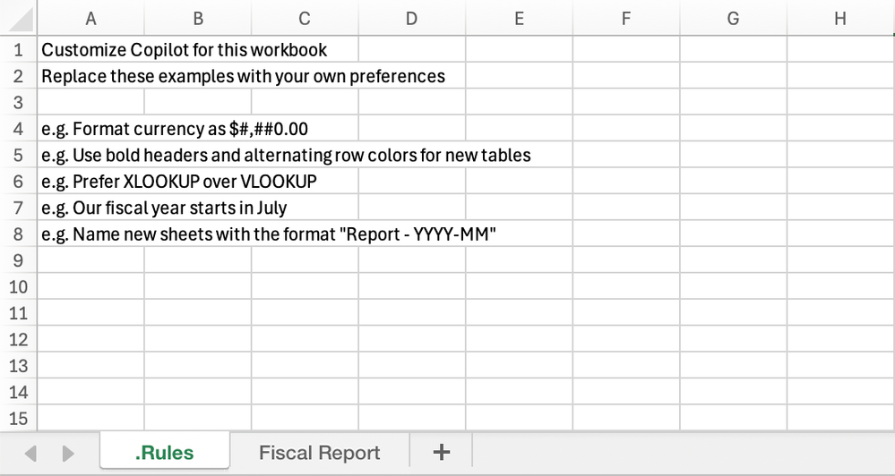
Copilot agents: Planner agent launches and model selection for Researcher
Model and mode selection for the Researcher agentRolled out in June
After adding the Researcher agent to a Copilot conversation, users can now select from supported Researcher models and modes directly within the session, giving them control over the depth and approach of each research task and giving teams greater flexibility to match the right model to different tasks.
Planner agentRolled out in June
The Planner agent helps users plan, organize, and manage work more efficiently. In Microsoft 365 Copilot, the agent provides interactive task cards and actionable insights, making it easy for users to prioritize across Planner plans and focus on what truly matters. With natural-language prompts, users can also create and update tasks or ask the agent to generate structured plans with goals and buckets.
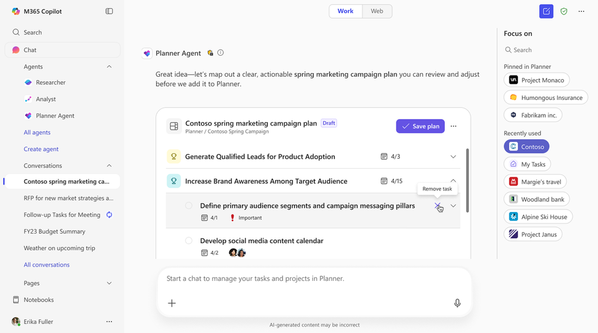
IT admin capabilities
Microsoft 365 admin center: new adoption and management capabilities
- Organization promptsRolled out in June
Admins can now create and publish organization prompts in the Microsoft 365 admin center, guiding users to apply Copilot to common workflows in effective and practical ways. Users can find these organization prompts in Copilot Chat’s prompt suggestions and prompt gallery, helping them develop good prompting habits and explore Copilot use cases that suit their needs. - Cost management dashboardRolled out in June
The cost management dashboard in the admin center provides a centralized place to enable, manage, and optimize spending on usage-based AI experiences, including Copilot Cowork. Admins can allocate Copilot Credits, set spending policies and limits by user group, and choose between prepaid credits and pay-as-you-go billing. Reports, budgets, alerts, and hard limits help organizations monitor usage, control costs, and manage spending. - Team-level cost reportingRolling out in July
Insights will also provide a dashboard with cost reports by user group or team, giving team leaders visibility into their team’s Copilot credit usage. Enabled by default, the dashboard is available to managers with at least five direct reports, Insights analysts, and global admins, helping managers quickly understand and control AI spending. - Agent metrics available for custom reportingPublic preview in July; general availability in September
Agent-related metrics will be available in Insights, allowing analysts to combine granular agent usage data with organizational context, identify adoption trends, create custom reports, and make data-driven decisions without relying on prebuilt dashboards. - Organizational messages support hybrid-joined devicesRolled out in June
Organizational messages now support hybrid-joined devices, allowing admins to deliver targeted in-product communications to users of devices connected to both on-premises Active Directory and Microsoft Entra ID. This expands message reach in enterprise environments where hybrid identity configurations are common, helping organizations continuously drive awareness, onboarding, and adoption of Copilot, agents, and other Microsoft 365 experiences while closing a critical device-coverage gap. - Vision control toggleRolled out in June
Admins now have a control toggle for Vision in Microsoft 365, a capability that uses image streams from screen sharing or camera sharing as model input. Organizations can therefore decide when and where Vision may be used.
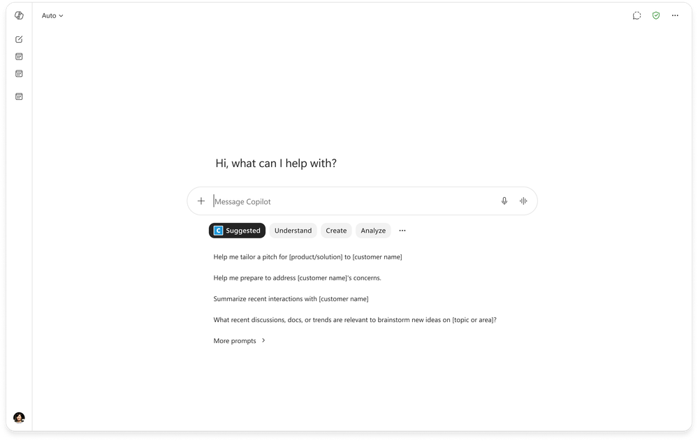
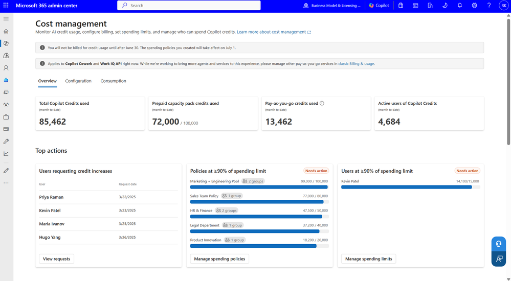
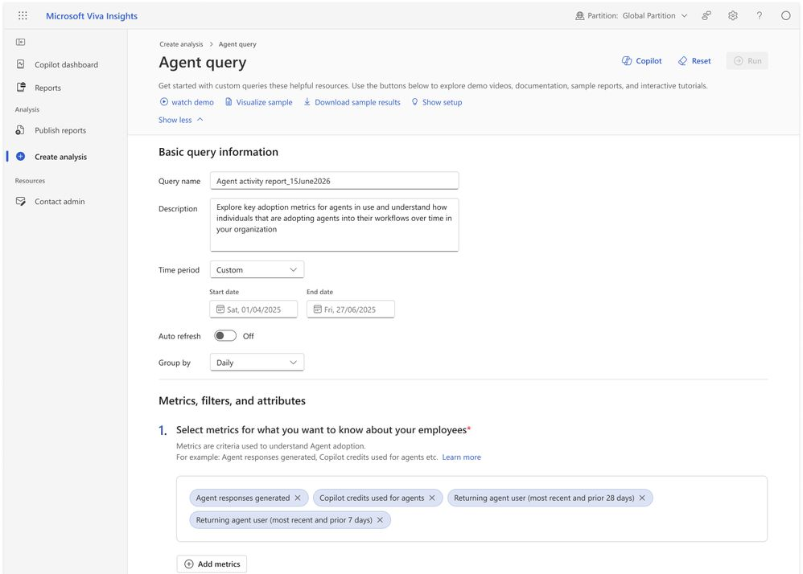
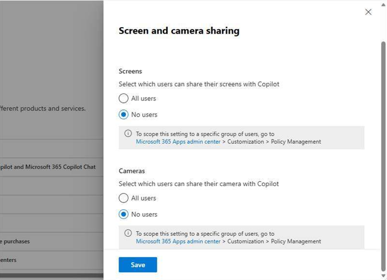
Purview Data Loss Prevention: external email restrictions and Cowork controls
Restrict references to external emailPublic preview in June; general availability in July
Microsoft Purview Data Loss Prevention (DLP) can now restrict Microsoft 365 Copilot and Copilot Chat from referencing external email. Admins can use this capability to exclude email from external senders so it is not summarized, cited, or used as grounding data for Copilot responses. This helps reduce the risk of external, third-party, or unreviewed information appearing in AI-generated content while still allowing users to work efficiently with trusted internal content. The capability applies to Microsoft 365 Copilot and to agents built in Copilot Studio, published to Microsoft 365 Copilot, and using only Microsoft 365 data.
Purview controls extend to CoworkRolled out in June
Microsoft Purview controls now extend to Cowork, allowing organizations to use the same tools that manage Microsoft 365 Copilot to maintain security and compliance. Cowork supports sensitivity label inheritance and display, audit logging, viewing interactions in the Data Security Posture Management (DSPM) Activity Explorer, and Insider Risk Management, eDiscovery, Data Lifecycle Management (DLM), and Communication Compliance for Cowork interactions. This enables organizations to protect and govern Cowork interactions with familiar tools.
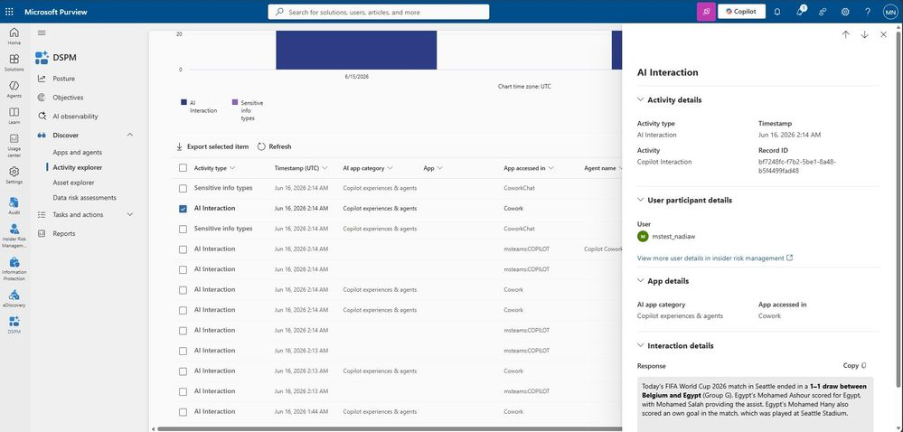